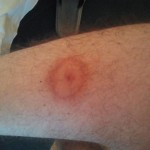

Хвороба Лайма — це природно-осередкова інфекційна хвороба з групи бактеріальних зоонозів, яку спричинюють борелії комплексу Borrelia burgdorferi sensu lato. Хворобу передають кліщі. Характеризується вона переважним ураженням шкіри у вигляді мігруючої еритеми, а також нервової системи, опорно-рухового апарату і серця.

Перебіг захворювання зазвичай має три фази, які проявляються різними симптомами. Фази можуть перебігати тяжко, або легко, їх послідовність може піти й в іншому порядку. Нерідко хворі мають також неспецифічні прояви, такі як втома, нічна пітливість, лихоманка або неспецифічний біль у суглобах та м'язах. Хвороба Лайма може проявлятися ураженнями шкіри, нервової системи, суглобів та серця. Хвороба може стати хронічною. Іноді інтервали між окремими фазами захворювання є довгими і безсимптомними.
Фази захворювання
Перша фаза захворювання — шкірні прояви (мігруюча еритема). Часто, приблизно до чотирьох тижнів, на місці укусу кліща є почервоніння. Загалом, їх діаметр збільшується поступово, але в центрі блідіше. Також висип є чіткою ознакою хвороби Лайма. Тим не менш, він відсутній в кожному другому випадку. Інші симптоми включають гарячку, кон'юнктивіт, головний біль, м'язові і суглобові проблеми. Швидка терапія особливо важлива на цій стадії захворювання. Чим раніше розпочато лікування захворювання, тим легше запобігти хронічному перебігу.
Друга фаза захворювання — поширення в організмі. Це може бути мігруюча кожні 7-20 днів еритема, супроводжується повторними (через кілька тижнів) симптомами артралгії (біль у суглобах), лимфоаденопатій (реакцією лімфовузлів), невралгій, загальними симптомами інтоксикації. У цю фазу збудники поширюються в організмі. Якщо нервова системи уражена (гострий нейробореліоз), то може розвинутися параліч, наприклад, параліч лицьового нерва (параліч Белла). Крім того відбуваються сенсорні порушення. Зустрічаються рідше менінгіт або енцефаліт з гарячкою та болем в шиї. Також може постраждати серце, що, часто проявляється у вигляді серцевої аритмії, міокардиту, перикардиту.
Може розвинутися погіршення слуху, ураження інших органів.Третя фаза захворювання — хронічна стадія. Пізніше ураження можуть проявлятися протягом декількох місяців до декількох років. Вони захоплюють, головним чином, суглоби, нервову систему та шкіру. Найчастіше уражені колінні суглоби (артрит Лайма). Прояви можуть зберігатися, або періодично загострюватися. Особливо на руках і ногах іноді відбуваються зміни шкіри, вона стає тоншою і блакитного кольору (хронічний атрофічний акродерматит Герксгеймера). Також хронічне запалення головного і спинного мозку (хронічний нейробореліоз) з паралічем є можливим пізнім проявом хвороби Лайма. Також можливе продовження тих уражень, що були у другій фазі.
Лікування
Лікування хвороби Лайма включає комплекс лікувальних заходів, в якому провідна роль відводиться етіотропної терапії. Лікарські препарати призначають перорально або парентерально залежно від клінічної картини і періоду хвороби. На сьогодні найбільш ефективним препаратом для лікування хвороби Лайма є цефтріаксон в добовій дозі 1-2 г. Тривалість курсу більше 1 місяця. З пероральних препаратів перевагу віддають антибіотикам тетрациклінового ряду. Препарати призначають в першому періоді хвороби при наявності еритеми в місці присмоктування кліща, гарячки і проявів загальної інтоксикації за умови відсутності ознак ураження нервової системи, серця, суглобів. Призначають доксициклін по 01 г 2 рази на добу, курс лікування не менше 10 днів. Дітям до 8 років призначають амоксицилін всередину 30-40 мг /(кг х добу) в 3 прийоми або парентерально 50-100 мг /(кг х добу) в 4 ін'єкціях. Не можна знижувати разову дозу препарату і зменшувати кратність прийому ліків, так як для отримання терапевтичного ефекту необхідно постійно підтримувати достатню бактеріостатичну концентрацію антибіотика в організмі хворого. При виявленні у хворих ознак ураження нервової системи, серця, суглобів (у хворих з гострим і підгострим перебігом) призначати препарати тетрациклінового ряду недоцільно, оскільки у деяких хворих після проведеного курсу лікування виникали рецидиви, пізні ускладнення, хвороба набуває хронічного перебігу. При виявленні неврологічних, кардіальних і суглобових уражень зазвичай застосовують пеніцилін або цефтриаксон. Пеніцилін призначають по 500 тис. — 1 млн ОД внутрішньом'язово 8 разів на добу (з інтервалом через 3 години). Тривалість курсу 14 діб. Хворим з клінічними ознаками менінгіту/менігоенцефаліту разову дозу пеніциліну збільшують до 2-3 млн ОД залежно від маси тіла. Багаторазовим введенням пеніциліну підтримують постійну бактерицидну концентрацію його в крові і уражених тканинах. Подібна схема пеніцілінотерапіі апробована і успішно застосовується при лікуванні сифілісу, патогенез якого певною мірою схожий з патогенезом хвороби Лайма.
Профілактика
Специфічна профілактика хвороби Лайма в даний час не розроблена. Заходи неспецифічної профілактики аналогічні таким при кліщовому енцефаліті. Вельми ефективний спосіб попередження зараження — не допускати присмоктування кліщів (використання захисного одягу і відлякуючих засобів).